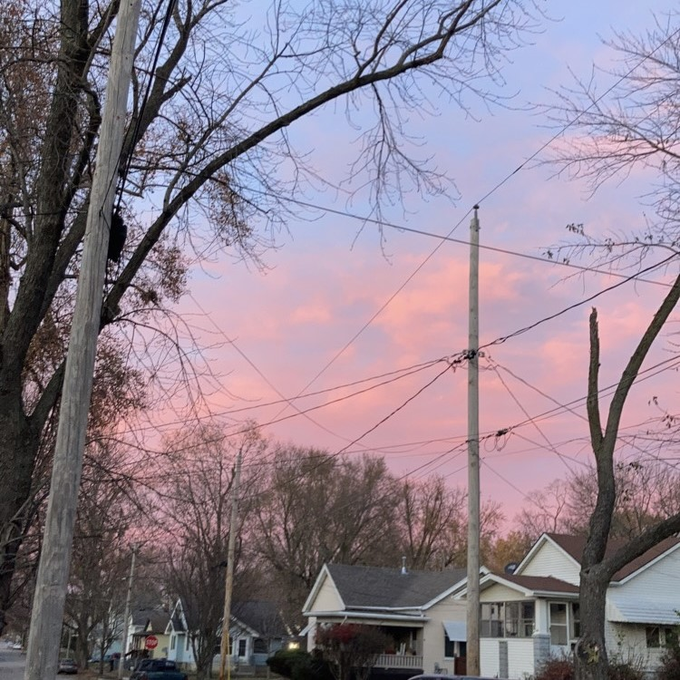
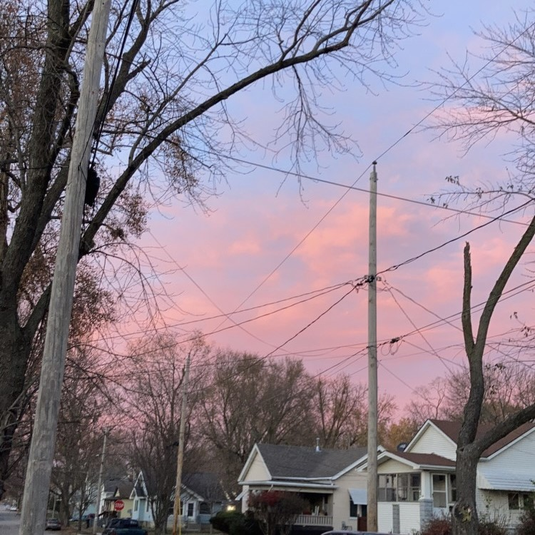

What I Do
Currently, I'm most focused on developing my skills as a musician. I spend several hours a week practicing drums on my own and with my band. I also have been working on practicing and developing the sounds of the new songs that I wrote over the summer of 2022. Over the past few months, I played a couple open mics and made a drum cover recording, which you can see below. I also enjoy photography as an additional creative outlet. I love to take pictures of nature. Some examples of my photography are shown underneath the videos.
 
